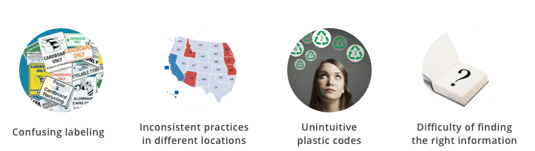
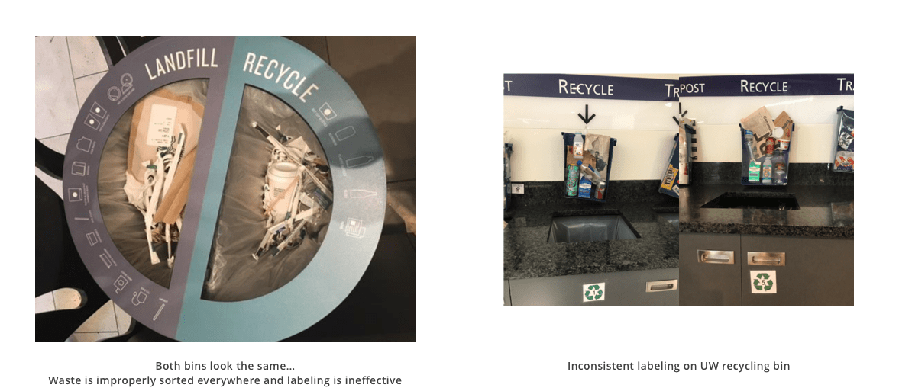
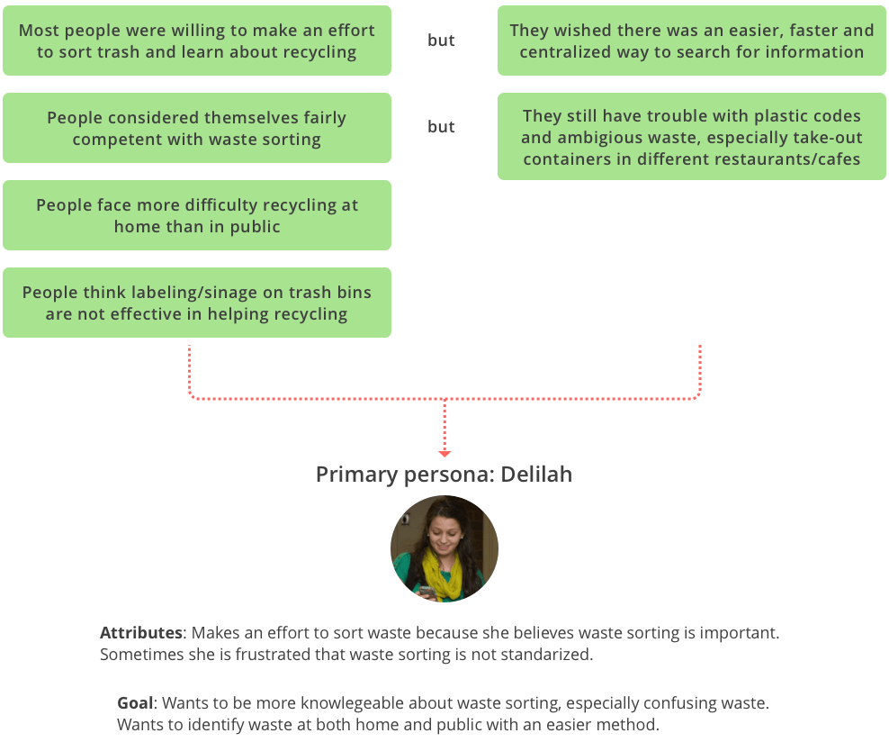
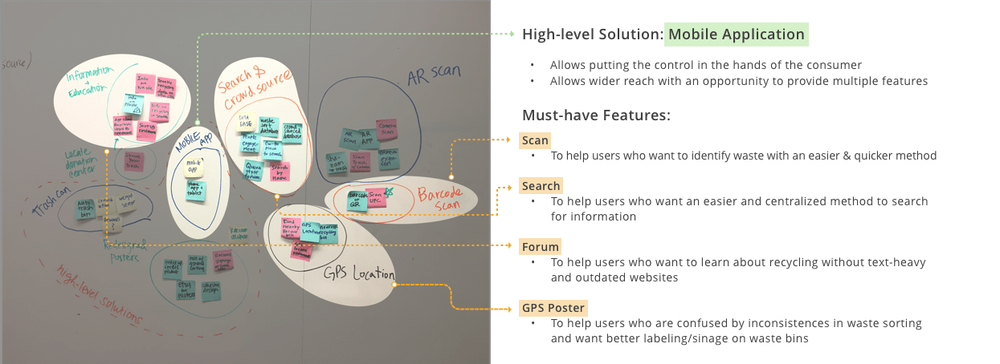
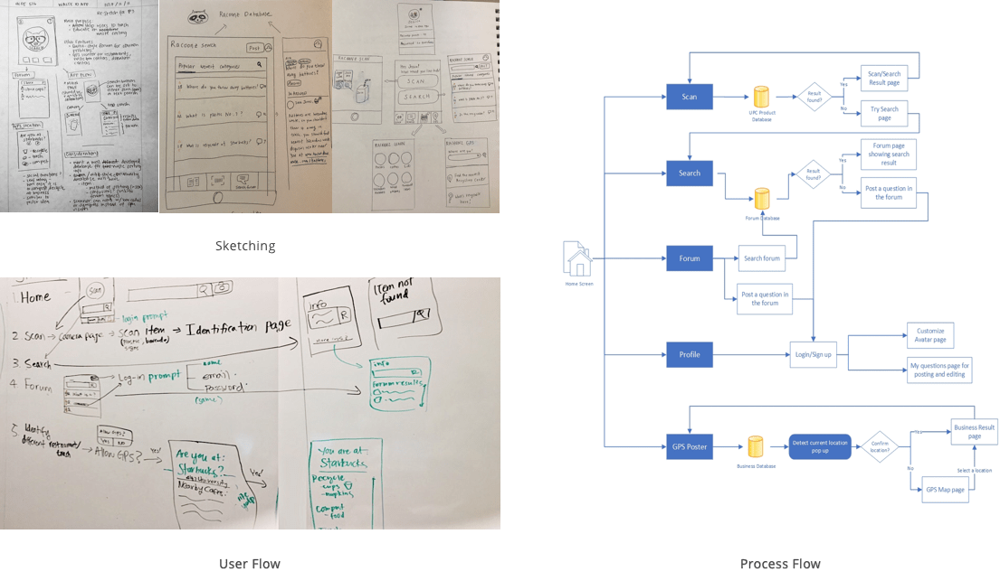
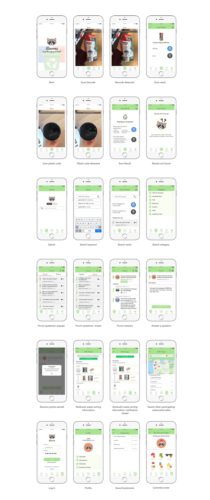
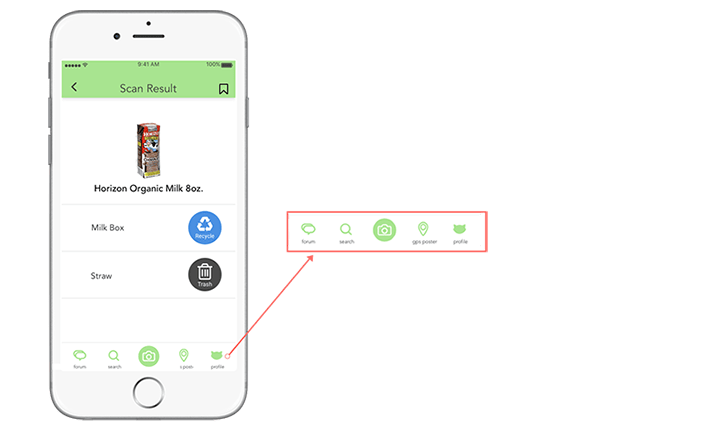
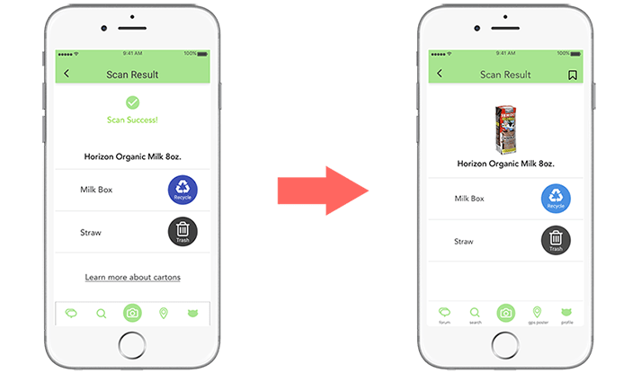
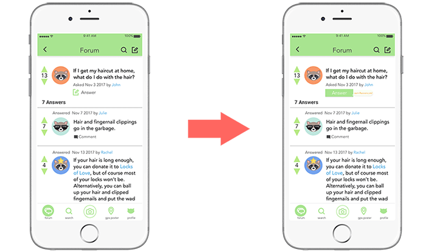
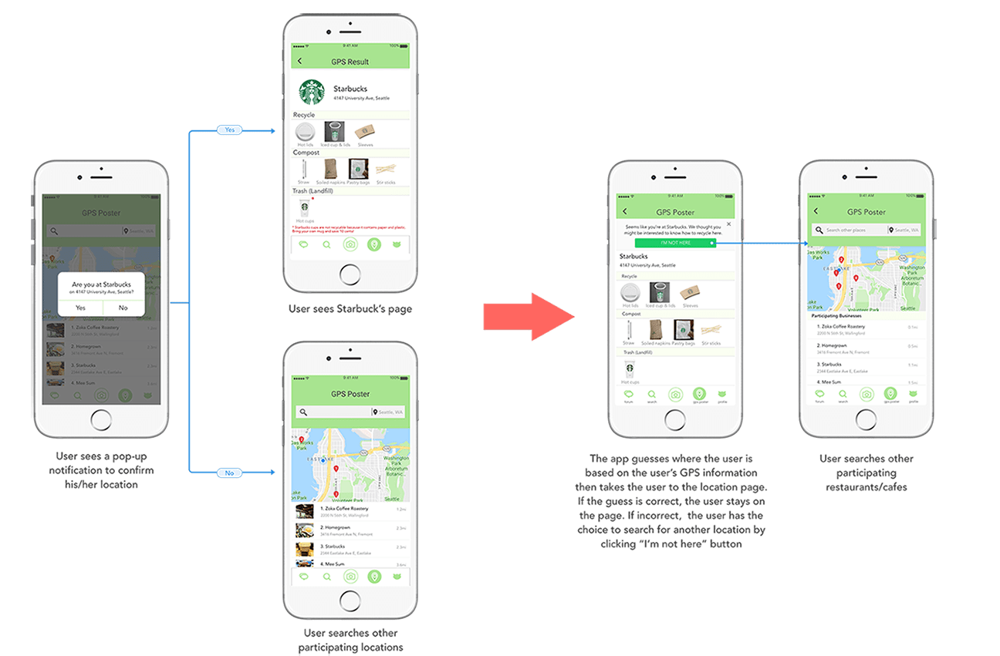

Problem Statement
The city of Seattle is recognized as one of the most sustainable cities in the United States, in part due to its widespread waste sorting system. Citizens are encouraged and incentivized to sort their waste into three main categories: compostables, recyclables, and landfill waste. However, waste sorting protocols can often be tricky, especially for tourists or newcomers to the city. The inspiration for this project came from our own frustrations with waste sorting.
Design Question
"How can we make it easier for people to identify and sort their waste, while educating users on proper waste sorting methods?"
Quickly identify how to sort the waste by scanning barcode or plastic code without having to type in search
Find out how to throw away your waste by searching from Racoonz database
Freely ask and answer questions and learn about recycling in an interactive community
Confused about what’s recyclable at a cafe you're at? Use Racoonz GPS to learn about waste sorting method at a particular place
Research Process
Observation
In order to find out how recycling is practiced in the city, we went around Seattle and observed trash cans and how people throw away waste. Observation helped us find additional insights to interviews and surveys because there's a mismatch of what people say and what people do.
Semi-structured Interview
We conducted a total of seven user interviews in order to gain some qualitative insight into some common frustrations with waste sorting. The user interviews were conducted in three different areas in Seattle: downtown, University Village, and the Husky Union Building (HUB) at UW. Though our sample size was small, we got a fairly diverse sample which included parents, students, people who are environmentally conscious, and people who aren’t.
Online Survey
After our user interviews, we consolidated common themes and incorporated them in specific questions in the survey. With an online survey, we were able to gain quantitative insights from a much wider audience (45+ respondents) in a short amount of time. Our survey gave us some valuable insights into people’s sorting habits and their frustrations with waste sorting.
Persona Development
Ideate & Sketch
Based on the primary persona's goal and attributes, we brainstormed high-level solutions and features by doing affinity diagramming on a whiteboard.
Now we have decided our high-level solution and features, all of the team members went through sketching the features and the user flow.
Design Decisions
We designed under an assumption that we have a database about waste sorting methods for different items. For location-based information, we only have data for participating businesses. Also we are only focusing on Seattle's waste sorting practices because recycling laws vary across state.
Simple
The app is not intended to engage users - the primary goal is to help users identify trash. We have to keep the app easy and simple so the users can complete the task in minimum steps. Also, the information should be presented in an easily digestible manner so the users can read content quickly.
Refreshing & Fun
The app should invoke a fun, positive, and fresh mood. We decided to use bright blues and greens to keep the theme of earth-friendly environmentalism. The incentive system shuold be unobstrusive and fun.
Final Screens
Evaluation & Iteration
Because of the tight timeline, we skipped low-fidelity prototype and dived right into high-fidelity prototype design. I was responsible for the entire design from logo creation, user interface design to interactive prototypes. Because we started on high-fidelity early, we were able to gain solid user feedbacks on not only the user flow but also specific design elements. The participants were asked to test the application's four main features: scan, search, forum, and GPS poster.
Add tab labels
Although the functionality of the app is simple, the partipants were not able to figure out what each icon meant until they went into each tab and figured out the functionalities. Because our goal is to minimize the users' guesswork and help them finish their task efficiently, we decided to label the tabs.
Delete "Scan Success" and utilize the space
The participants wanted a visual image for their scanned item to confirm the result. We questioned if "Scan Success" message would be necessary when the users already see the result. We decided to delete the message and utilized the white space with an image of the scanned item.
Make "Answer" button pop more
The key part to the forum is active discussion among the users. We want more people to write an answer and ask questions. However, the participants took a while to find "Answer" button. We decided to make the button pop more with design hierarchy.
Introduce GPS Poster feature differently
One thing we struggled most about was making GPS Poster feature intuitive to users, and the participants did find the feature confusing. Because there's nothing else similar (that we are aware of), we iterated on the simplest flow. Instead of asking where the user is with a pop-up screen, the app guesses the user's location and brings up the result. It does not matter whether the guess is accurate, because the goal is to inform users the functionality of this feature.
Reflection & Final Direction
- It was difficult not to fall into a rabbit hole and think about the solution before doing enough research. I realized the importance of conducting observation and user reseach with unbiased attitude.
- Iteration leads to success! Our team was glad to start early on the high-fidelity prototypes and start user testing early. I was surprised at the improvements after one iteration.
If I had more time, I would investigate more about the difference between recycling practices at home vs. public. Pain points specific to certain situations might spur another solution that is non-app based.